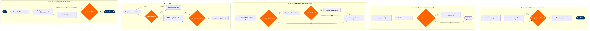

| Step | L4 Step Name | KPI / Target | Pain Point / Risk | Gate |
|---|---|---|---|---|
| 1.1 | Ingest ratified CBA language into rule repository | CBA rule ingestion initiated within 5 business days of ratification | Manual translation of legal CBA language into Jeppesen-readable scheduling constraints requires specialist knowledge; misinterpretation of trip rig, rest augmentation, or bidding period provisions is common | |
| 1.2 | Configure duty/rest limits in scheduling engine | 100% of CBA rest rules coded and tested within 10 business days of ratification | FAR Part 117 regulatory minimums and CBA contractual minimums differ by crew position (Captain vs F/O vs Flight Attendant); dual-layer rule stacking in Jeppesen increases configuration complexity and regression testing cycles | |
| 1.3 | Configure premium pay triggers and trip rig rules | Pay rule configuration accuracy ≥99.5%; zero retroactive pay adjustments attributable to misconfiguration in first post-implementation payroll cycle | CBA premium pay provisions (e.g., reassignment pay, deadhead premium, per diem differentials) are frequently misinterpreted; configuration errors are not detected until payroll run, creating retroactive liability | |
| 1.4 | Validate rule configuration against CBA source text | Zero CBA violations attributable to misconfiguration within 90 days of new rule deployment | No automated cross-reference tooling between CBA legal article numbers and Jeppesen rule IDs; validation is entirely manual and relies on individual analyst expertise, creating key-person dependency | ⚠ |
| 2.1 | Run pre-publication CBA compliance scan on draft schedule | Compliance scan completed ≥2 hours before schedule publication deadline; scan must cover 100% of published pairings | Late schedule changes driven by aircraft swaps or demand reforecast force rescan within 30-minute windows; Jeppesen batch compliance jobs may not complete in time, leaving residual violations undetected | |
| 2.2 | Adjudicate violations and determine waiver or remediation | 100% of violations resolved or formally waived before schedule publication; adjudication cycle ≤4 hours | Some CBA violations require mutual union agreement for waiver (e.g., minimum rest reduction below contractual floor); union contact SLAs are not always met in real-time operations, creating publication holds | ⚠ |
| 2.3 | Remediate non-compliant pairings or assignments | Remediation cycle ≤90 minutes; crew coverage maintained ≥97% post-remediation | Remediation options are constrained by qualified reserve availability at domicile; fixing one CBA violation can cascade into secondary violations for adjacent pairings, triggering iterative rescan loops | |
| 2.4 | Monitor real-time crew duty times and rest windows | Duty limit alerts triggered ≥60 minutes before contractual limit; zero post-facto exceedances reported in monthly audit | ACARS data latency can delay duty-on/duty-off timestamp capture by 5–15 minutes, creating a window of undetected limit approach; iCrew alert thresholds must be manually calibrated per CBA article and crew category | |
| 2.5 | Decide on duty extension or crew replacement during IROPS | Crew replacement or extension decision made ≥45 minutes before departure; 100% of CBA waiver invocations logged with timestamp and crew consent reference | CBA duty extensions require individual crew member consent; crew refusals during IROPS with no available replacement create cascading departure delays; iCrew has no automated consent-capture mechanism, exposing airline to grievance risk | ⚠ |
| 3.1 | Log and acknowledge crew grievance within CBA window | 100% of grievances logged within 24 hours of receipt; formal acknowledgement delivered within CBA Step 1 filing window (typically 72 hours) | CBA grievance filing windows (commonly 10–30 days from incident) require precise date/time stamping of the triggering event; SAP SuccessFactors case management is not purpose-built for CBA article-based aviation grievance workflows | |
| 3.2 | Investigate grievance and retrieve corroborating data | Investigation completed within CBA Step 1 response window (typically 14 calendar days); 100% data retrieval from duty records for incidents ≤24 months old | Historical duty and pay records span Jeppesen, iCrew, and SAP — three separate systems with no unified query interface; cross-system data extraction for grievance investigations is manual and can take 2–5 days, compressing response timelines | |
| 3.3 | Assess grievance merit and issue management response | Management response delivered within CBA Step 1 deadline 100% of the time; grievance upheld rate ≤15% | Inconsistent management responses across crew domiciles create arbitration precedents that constrain future positions; absence of a centralised CBA case law repository means analysts are unaware of prior rulings on identical fact patterns | ⚠ |
| 3.4 | Escalate unresolved grievance to arbitration | Arbitration win/settlement rate ≥60%; average cost per arbitration case ≤$15,000 | Arbitration preparation requires multi-year historical data retrieval; poor data quality from legacy crew system migrations (pre-2023) degrades management's evidentiary position and increases settlement risk | |
| 4.1 | Execute monthly CBA compliance audit across all domiciles | Audit completed by day 5 of the following month; CBA violation rate ≤0.5% of all duty periods in scope | ETL pipelines aggregating data from Jeppesen, iCrew, and SAP into Redshift are fragile; data latency or pipeline failures cause the audit to miss late-adjusted duties and produce understated violation counts | |
| 4.2 | Distribute compliance report to union per CBA schedule | Report delivered by 10th of the month 100% of the time; zero data discrepancies disputed by union within 30 days of delivery | CBA may require specific tabular formats or certified audit trail attachments not natively supported by Tableau; manual reformatting prior to union delivery introduces transcription errors and reputational risk | |
| 4.3 | Determine if corrective action plan is required | CAP initiated within 5 business days of audit finding confirmation; 100% of open CAPs closed within 60 days | Systemic violations (e.g., recurring pay calculation errors, scheduling rule misapplication) require IT system changes with 4–8 week lead times; union may file class grievances covering the entire affected population while the CAP is open | ⚠ |
| 5.1 | Trigger CBA expiry alert and negotiation readiness review | Negotiation preparation formally initiated ≥18 months before CBA expiry; zero missed expiry dates across all bargaining units | Multiple CBAs (pilots, flight attendants, dispatchers, ground operations) carry staggered expiry dates; tracking across contracts in SAP SuccessFactors requires custom calendar configuration that is not standard in the SuccessFactors Employee Central module | |
| 5.2 | Extract historical compliance and cost data for bargaining | Data package completed ≥12 months before CBA expiry; benchmark dataset covers ≥5 comparable peer carriers | Historical data quality degrades beyond 24 months due to crew system migrations; IATA labour cost benchmarks are published on 12–18 month lag cycles, reducing relevance of peer comparisons at the bargaining table | |
| 5.3 | Validate bargaining data package for negotiation | Data package formally approved ≥10 months before CBA expiry; zero material data gaps surfaced at the bargaining table | Union may dispute the airline's data methodology or system-of-record selection; absence of a jointly agreed data framework creates credibility risk and can stall early bargaining sessions | ⚠ |
| 5.4 | Implement ratified CBA rules in scheduling and pay systems | System implementation completed ≥14 calendar days before CBA effective date; zero pay errors attributable to new CBA rules in first post-implementation payroll cycle | CBA ratification often occurs within days of the contractual effective date, leaving insufficient time for Jeppesen rule testing cycles and SAP parallel pay run validation; compressed timelines increase risk of live-environment misconfiguration |